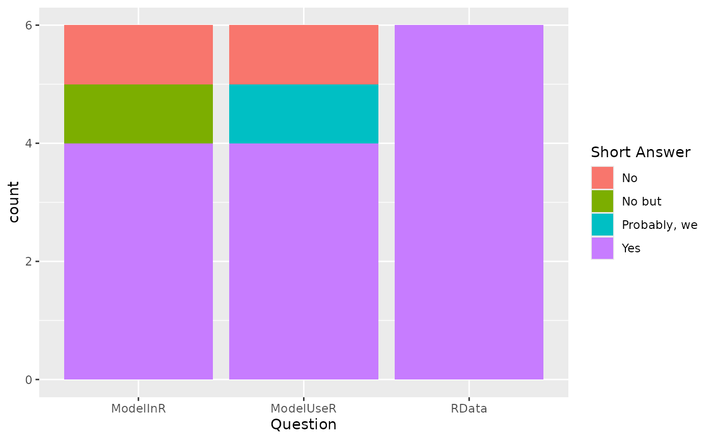

MS Keyrun Species, Environment, Data Formats
Sarah Gaichas
12 April, 2024
Source:vignettes/SpeciesEnvDat.Rmd
SpeciesEnvDat.RmdSpecies lists
(We first pull species lists from the Rpath model and load the survey results.)
# Sean's file from https://github.com/NOAA-EDAB/GBRpath/blob/master/data/SOE_species_list.RData
# loads the RData as object "species"
invisible(source_data("https://github.com/NOAA-EDAB/GBRpath/blob/master/data/SOE_species_list.RData?raw=True"))
# used to get a list to paste into google form
#write.table(file = "spplist.txt", sort(unique(species$RPATH)))
rpathspp <- species %>%
select(RPATH, COMNAME, SCINAME, SVSPP) %>%
filter(RPATH != "") %>%
distinct()
aggs <- rpathspp %>%
count(RPATH, sort = TRUE, name = "Nspp") %>%
filter(Nspp > 1)
singlespp <- anti_join(rpathspp, aggs) %>%
mutate(Nspp = 1)
rpathlist <- full_join(singlespp, aggs)
#survey link https://forms.gle/gfA3tKFKRBxf3Mu38
#results link https://docs.google.com/spreadsheets/d/1sckY46jdyBa1Fhydw2syBawkjGPcHX4YwQmDCDBXcGU/edit#gid=284425233
# resultfile <- drive_find(pattern = "MS-Keyrun Species", type = "spreadsheet")
#
# responses <- drive_download(resultfile, type = "csv", overwrite = TRUE) %>%
# {read.csv(.$local_path)}
responses <- read.csv("supportingFiles/MS-Keyrun Species, Environment, Data Format (Responses) - Form Responses 1.csv",header=T)
names(responses)[3] <- "Species"
names(responses)[5] <- "Environment"
names(responses)[7] <- "ModelInR"
names(responses)[8] <- "ModelUseR"
names(responses)[9] <- "RData"Multispecies models (focal species)
Multispecies models focus on a subset of interacting species. They will estimate population parameters based on fits to biomass, catch, and (if appropriate) size or age information, establish reference points, and evaluate status for the interacting species.
Decision: Use the top ranked 10 species in the table below: Atlantic herring, Atlantic cod, goosefish, haddock, spiny dogfish, winter founder, yellowtail flounder, Atlantic mackerel, silver hake, and winter skate. Rationale: These species occupy Georges Bank while pollock is found more in the neighboring Gulf of Maine.
These species received >2 vote for inclusion in MS-Keyrun multispecies models:
# each row is a response with a comma delimited list of species
# string split each row to species
# tally by species
# histogram
msspecies <- data.frame(Species = responses$Species,
Model = c("MS", "MS", "NA", "MS", "Rpath", "MS")) %>%
filter(Model != "NA") %>%
separate_rows(Species, sep = ",") %>%
mutate(Species = str_trim(Species, side = "both"))
focal <- msspecies %>%
filter(Model == "MS") %>%
count(Species) %>%
filter(n > 2) %>%
left_join(rpathspp, by = c("Species" = "RPATH")) %>%
select(-COMNAME) %>%
arrange(desc(n))
knitr::kable(focal)| Species | n | SCINAME | SVSPP |
|---|---|---|---|
| AtlHerring | 4 | CLUPEA HARENGUS | 32 |
| Cod | 4 | GADUS MORHUA | 73 |
| Goosefish | 4 | LOPHIUS AMERICANUS | 197 |
| Haddock | 4 | MELANOGRAMMUS AEGLEFINUS | 74 |
| SpinyDogfish | 4 | SQUALUS ACANTHIAS | 15 |
| WinterFlounder | 4 | PSEUDOPLEURONECTES AMERICANUS | 106 |
| YTFlounder | 4 | LIMANDA FERRUGINEA | 105 |
| AtlMackerel | 3 | SCOMBER SCOMBRUS | 121 |
| SilverHake | 3 | MERLUCCIUS BILINEARIS | 72 |
| WinterSkate | 3 | LEUCORAJA OCELLATA | 23 |
Species modeled by all compared multispecies models could include all of these, or could be limited to a subset.
Food web model (focal + rest of system)
The food web model is intended to examine wider ecosystem responses to management measures applied to a subset of interacting species. It will estimate predator-prey interaction and other parameters based on fits to biomass, catch, and diet information. This model should track general trends (if not interannual variability) for focal species and produce reasonable reactions by their predators and prey.
Current species groups in the GB Rpath model (all retained for MS-Keyrun):
Envrionmental data
Hydra, the length-based multispecies model, already incorporates a time series of Georges Bank bottom temperature as a covariate in simulation mode to force changes in growth, maturity, and recruitment. For MS-Keyrun, we can explore fitting the parameters governing the influence of this covariate.
Rpath can be directly forced by a primary production time series, and temperature-based mediation functions can be included (but it is unclear whether parameters can be fit for these functions).
Two mulispecies models are not currently set up to incorporate environmental data: MSCAA, MSSPM/Kraken
The WHAM model can potentially incorporate any environmental time series that can influence recruitment or mortality.
These environmental time series received >1 vote for inclusion in MS-Keyrun multispecies and Rpath models:
# each row is a response with a comma delimited list of environmental data
# string split each row to dataset name
# tally by dataset
# histogram
msenv <- data.frame(Environment = responses$Environment,
Model = c("MS", "MS", "NA", "MS", "Rpath", "MS")) %>%
filter(Model != "NA") %>%
separate_rows(Environment, sep = ",") %>%
mutate(Environment = str_trim(Environment, side = "both"))
includedenv <- msenv %>%
count(Environment) %>%
filter(n > 1) %>%
arrange(desc(n))
knitr::kable(includedenv)| Environment | n |
|---|---|
| Georges Bank bottom temperature | 4 |
| Georges Bank primary production | 3 |
| Cold pool index (mainly Mid-Atlantic) | 2 |
| Georges Bank bottom salinity | 2 |
| Georges Bank chlorophyll a | 2 |
| Georges Bank stratification | 2 |
| Georges Bank surface salinity | 2 |
| Georges Bank surface temperature | 2 |
| Georges Bank zooplankton abundance | 2 |
| North Atlantic Oscillation (basinwide) | 2 |
| Northeast channel slopewater proportions | 2 |
Decision: We will include GB temperature and primary production time
series as part of the MS-Keyrun dataset. Modelers may retrieve
additional data from ecodata.
The ecodata R package has up to date information at the
Georges Bank EPU scale as listed here: https://noaa-edab.github.io/ecodata/landing_page.
Current time series in ecodata:
Programming frameworks and data formats
Most models are either implemented in R or can work directly with R datasets:
# these are multiple choice yes/no so just plot
useR <- data.frame(ModelInR = responses$ModelInR,
ModelUseR = responses$ModelUseR,
RData = responses$RData) %>%
gather(question, answer, ModelInR:RData) %>%
mutate(shortans = ifelse(is.na(word(answer, 1, 2)),
answer,
word(answer, 1, 2)))
yesR <- useR %>%
group_by(question) %>%
count(answer=="Yes") %>%
mutate(tot = sum(n)) %>%
mutate(percent = n/tot*100)
knitr::kable(yesR)| question | answer == “Yes” | n | tot | percent |
|---|---|---|---|---|
| ModelInR | FALSE | 2 | 6 | 33.33333 |
| ModelInR | TRUE | 4 | 6 | 66.66667 |
| ModelUseR | FALSE | 2 | 6 | 33.33333 |
| ModelUseR | TRUE | 4 | 6 | 66.66667 |
| RData | TRUE | 6 | 6 | 100.00000 |
Decision: All surveyed agreed that we should maintain datasets within an R data package for the MS-Keyrun project.
See discussion of pros and cons of using R data package for standardizing input datasets and making them available.
Full survey results
Species
Responses:
ggplot(msspecies, aes(Species)) +
geom_bar() +
facet_wrap(~Model, nrow = 2, scales="free") +
theme(axis.text.x = element_text(angle = 90))
knitr::kable(responses$Rationale.for.species.included, col.names = "Species rationale", booktabs=TRUE)| Species rationale |
|---|
| 10 of these already in Hydra. 3 others (Pollock, white hake, red hake) may be included at some point in future |
| Major GB predator and prey species; Also included WFl, YFl and Haddock because of their commercial importance but they are not essential because they are not primary prey or predator species, |
| We have only tested MSSPM for models with 5 species. This keyrun project will be a further test of the software’s capacity/capabilities. A model that uses a smaller subset of key species should still be useful for multiple model inference. |
| Selected species will be focus of research track assessments in 2021-2026. No other reasoning applied. |
| GB Rpath is a full foodweb model |
| This is probably too many, but species that are commercially important and/or forage fish should be included. Perhaps a subset of this |
Environment
Responses:
ggplot(msenv, aes(Environment)) +
geom_bar() +
facet_wrap(~Model, nrow = 2, scales="free") +
theme(axis.text.x = element_text(angle = 90))
knitr::kable(responses$Rationale.for.environmental.time.series.included, col.names = "Environment rationale", booktabs=TRUE)| Environment rationale |
|---|
| already used in used in growth, maturity, recruitment (Hydra) |
| Environmental data currently is not built into the SCAA model |
| Environmental covariates are not yet implemented in the MSSPM version of Kraken, but we may be able to implement some capability. |
| Not much specifically, just thinking of variables with links to fish recruitment. |
| The Rpath model can be forced by primary production and potentially temperature. |
| These seem to be the time series that match best to the temporal scale of the models |
Model programming frameworks
Many but not all models interface with R and can use R datasets. Even for those that do not, all agreed on using an R data package for standardizing input datasets and making them available.
Responses:
ggplot(useR, aes(question)) +
geom_bar(aes(fill=shortans)) +
labs(x = "Question",
fill = "Short Answer") +
scale_x_discrete(labels = function(x) str_wrap(x, width = 35))
Short answer key: “No but” = No but we should be able to implement
some R connections to the MSSPM software.
“Probably, we” = Probably, we would need to sort out how to exprt from R
into Mysql